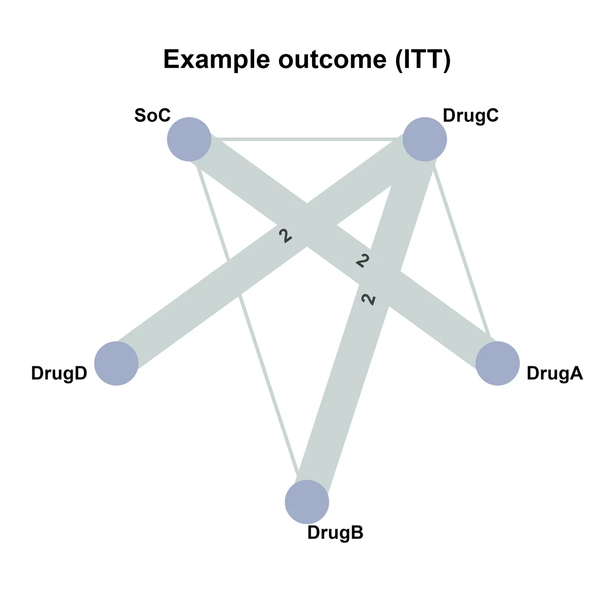
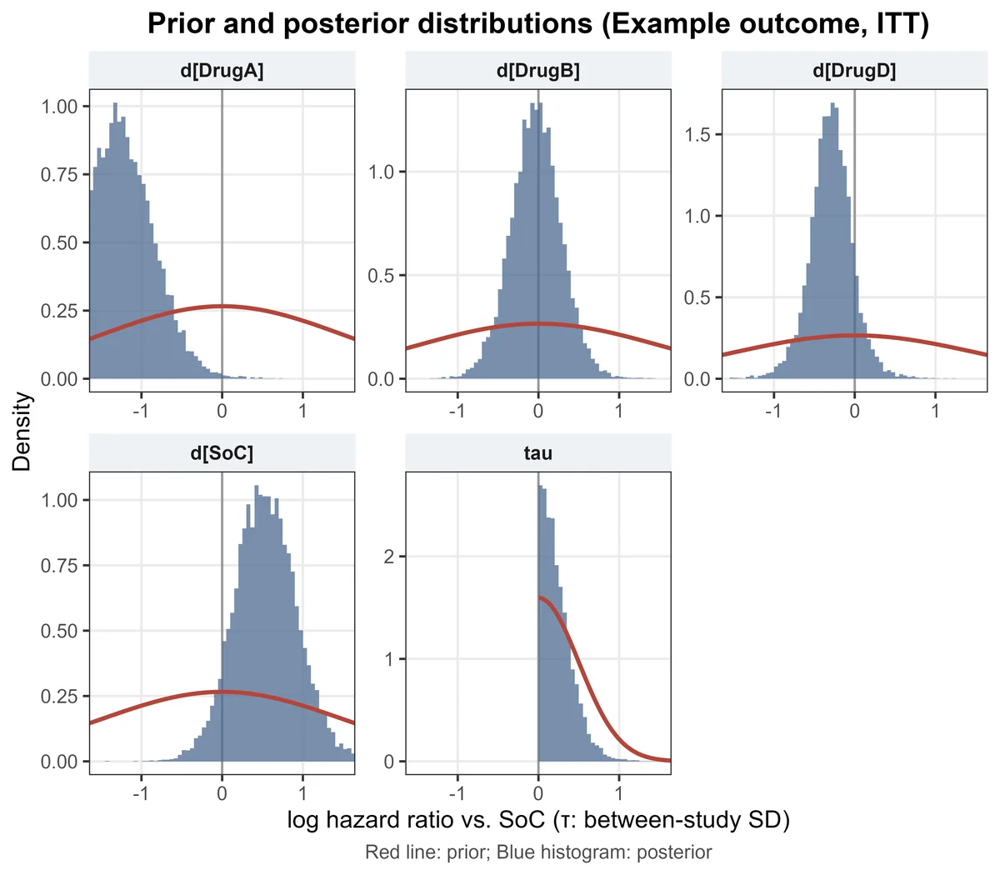
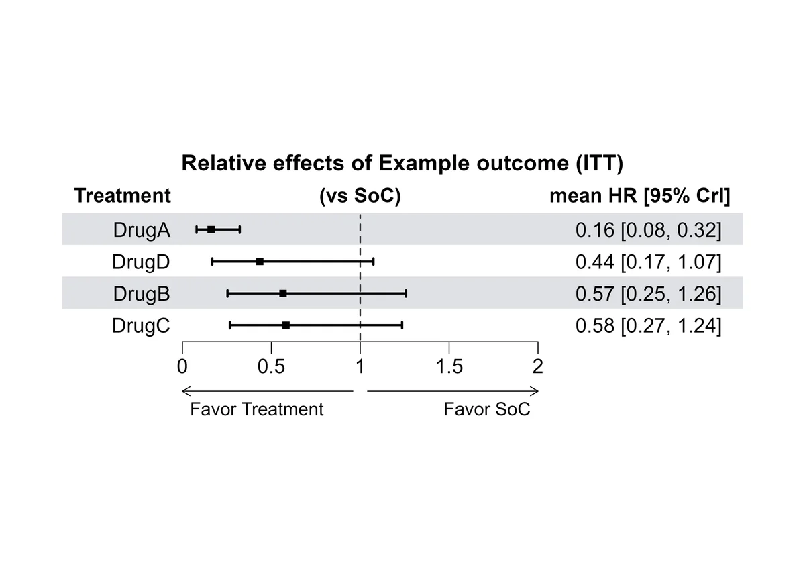
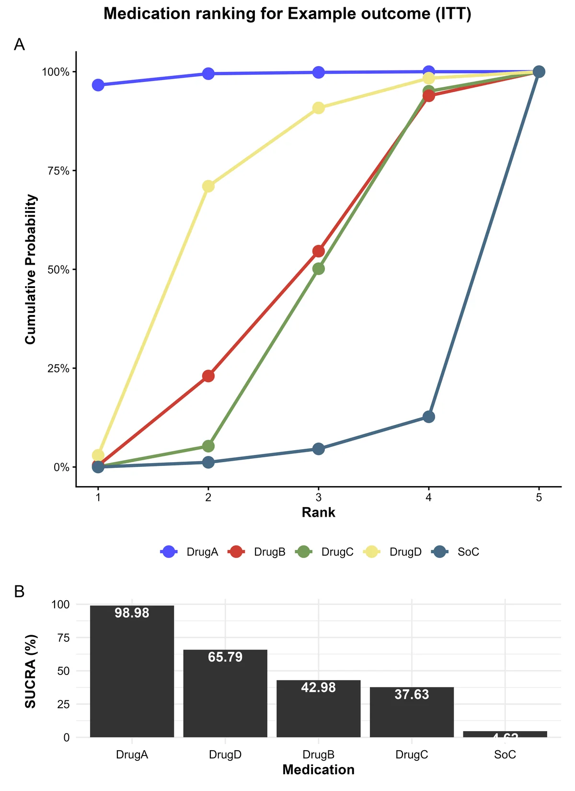
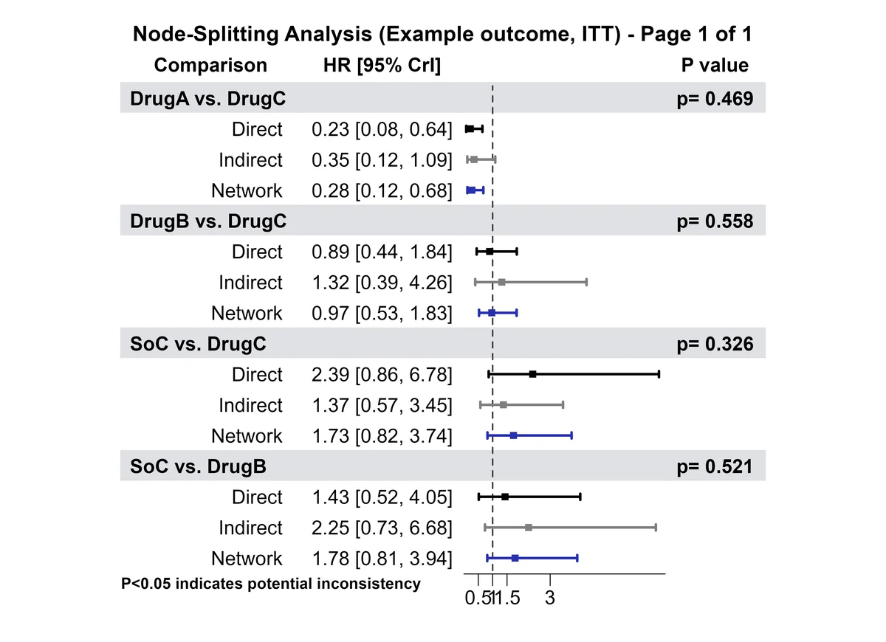
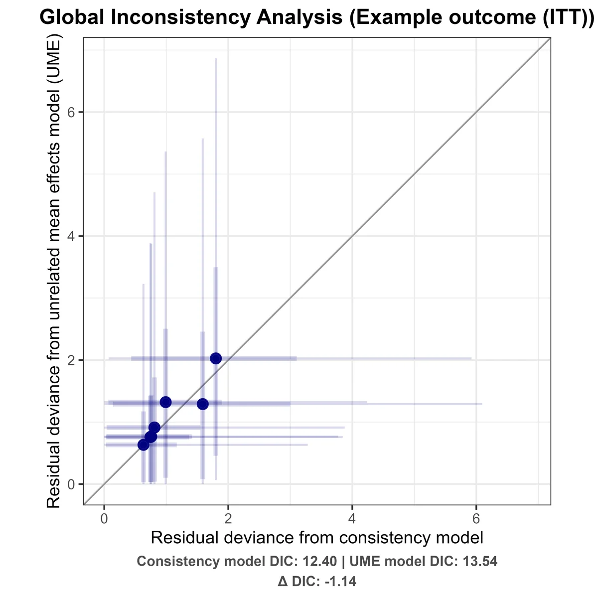
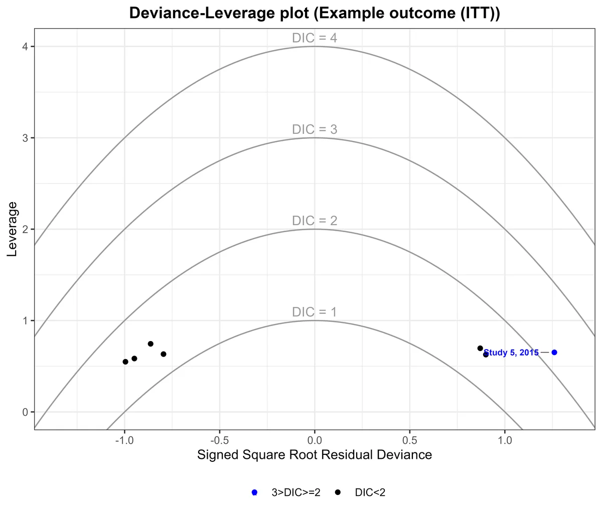

貝氏網絡統合分析（NMA）實作教學
用 R 套件 multinma 做 contrast-based（log HR）的隨機效應 NMA。從讀資料到敏感度分析拆成 11 個步驟，只要改一個設定檔就能套用到自己的研究。
概覽
網絡統合分析（network meta-analysis, NMA）把多個治療之間的直接比較與間接比較放進同一個模型，同時估計所有治療兩兩之間的相對效果。全部流程分成 11 個步驟，下方的依賴圖可以直接點到每一步。
每個步驟都是獨立的 R 檔，會自動輸出論文可用的圖（PNG，600 dpi）與表（CSV）。
步驟之間的依賴
箭頭代表「後面的步驟會用到前面步驟的結果」（只畫直接依賴）。想只跑某一步時，要先跑完它左邊連到的步驟。點方塊可以跳到該步驟。
parkinsons 資料集，藥名與研究特徵都是虛構的，只用來示範操作，沒有臨床意義。環境準備
- 安裝 R（4.3 以上）與 RStudio。
- multinma 底層使用 Stan。Windows 需要另外安裝與 R 版本對應的 Rtools；macOS 需要 Xcode Command Line Tools。
- 安裝套件（程式第一次執行時也會自動安裝缺少的套件）：
install.packages(c("multinma", "tidyverse", "scales", "patchwork", "ggsci",
"igraph", "ggraph", "forestploter", "ggrepel", "readxl"))下載與檔案結構
下載 nma-toolkit.zip 並解壓縮，會得到：
NMA/
├── config.R ← 所有設定都在這裡
├── run_all.R ← 一鍵跑完全部步驟
├── R/functions.R ← 共用函數（建網絡、跑模型、存檔）
├── steps/
│ ├── 01_data.R
│ ├── 02_network_graph.R
│ ├── …
│ └── 11_sensitivity.R
└── example/
├── example_data.csv ← 示範資料
└── config_example.R ← 示範設定原則上只需要改 config.R；steps/ 裡的程式不用動。
看 R/functions.R 完整程式碼
載入中…資料格式
資料用 Excel 或 CSV，採 contrast-based 格式：每列是一個研究中的一個治療組（arm），效果量是相對於該研究參考組的 log HR。
| 欄位 | 說明 |
|---|---|
studylab | 研究名稱，例如 Study 1, 2011 |
treat | 治療組名稱 |
logTE | log HR（相對於同一研究的參考組）；參考組那一列留空 |
selogTE | log HR 的標準誤；參考組那一列填該組的 SE（多臂研究用來計算共變異） |
Coeff | Y 表示這個研究的 SE 需依相關係數 ρ 調整（見下方） |
Sex、Age、Followup | 連續型研究特徵（男性 %、平均年齡、追蹤年數），供 transitivity 與 meta-regression 使用 |
Region_category、ROBINS | 類別型研究特徵（地區、ROBINS-I 偏誤風險） |
示範資料的內容（Study 3 是三臂研究，所以有 3 列）：
依 ρ 調整 SE
Coeff = "Y" 的研究，SE 會乘上 √ρ（等同變異數乘上 ρ），其他研究維持原本的 SE：
selogTE_adj = if (Coeff == "Y") selogTE * sqrt(rho) else selogTE主分析用 ρ = 0.5，敏感度分析再用 0.25 與 0.75 檢查結果是否穩定。不需要這個調整的話，把所有研究的 Coeff 都填 N 即可。
config.R 的 cfg$cols 對應到你的欄位名稱就好。設定 config.R
研究名稱、檔案路徑等共用設定都集中在 config.R 最前面。最少要改這幾項：
#---- 1. 研究名稱（會用在圖表標題與輸出檔名）----
cfg$outcome_label <- "All-cause dementia" # 結果名稱
cfg$analysis_label <- "ITT" # 分析族群，如 ITT / AT
cfg$file_tag <- "dementia" # 輸出檔名後綴
#---- 2. 檔案路徑 ----
cfg$data_file <- "D:/project/hrdata.xlsx" # .xlsx 或 .csv
cfg$data_sheet <- "AllCause_ITT" # .xlsx 才需要
cfg$out_dir <- "D:/project/result"其餘可以調整的項目：
| 設定 | 用途 |
|---|---|
cfg$ref_trt | 相對效果與森林圖的比較基準（預設 "SoC"） |
cfg$lower_better | HR 越低越好（排名用） |
cfg$rho_values、cfg$rho_main | 要建立哪些 ρ 的 SE 欄位、主分析用哪一個 |
cfg$mcmc | 先驗分佈、抽樣次數、預熱期、鏈數 |
cfg$reuse_models | 重複使用已經跑好的模型（見執行） |
cfg$trans_num、cfg$trans_cat | Transitivity 要比較的研究特徵 |
cfg$reg_covariates | Meta-regression 的共變項 |
cfg$sensitivity | 敏感度分析的情境 |
cfg$plot | 圖表的座標範圍與解析度 |
看 config.R 完整內容
載入中…執行
在 RStudio 開啟 run_all.R，按右上角的 Source，就會依序跑完 11 個步驟。想先用示範資料試跑：
setwd("解壓縮後的 NMA 資料夾")
config_file <- "example/config_example.R"
source("run_all.R")- 只跑部分步驟：把
run_all.R裡steps不需要的那行註解掉。後面的步驟會用到前面步驟的結果，每個步驟下方的「需要」有寫清楚。 - 不用每次重跑 MCMC：
cfg$reuse_models = TRUE時，跑過的模型會存在out_dir/models/，下次直接讀取。只想改圖的樣式時特別省時間。
out_dir/models/ 資料夾（或設 cfg$reuse_models <- FALSE），否則會讀到舊的模型。看 run_all.R 完整程式碼
載入中…01讀資料、建立網絡
讀入資料、依 ρ 建立調整後的 SE 欄位，再用 set_agd_contrast() 建立網絡：
net <- set_agd_contrast(
data = dm,
study = studylab,
trt = treat,
y = logTE, # log HR
se = selogTE0.5 # ρ = 0.5 調整後的 SE
)
print(net)print(net) 會列出研究數、治療數，並檢查網絡是否連通（Network is connected）。如果出現 disconnected，代表有治療組跟其他治療完全沒有比較路徑，需要先處理資料。
看完整程式碼
載入中…02網絡圖
每個點是一個治療，連線代表有研究直接比較這兩個治療，線越粗、研究數越多（超過 1 篇時會標上數字）。從圖可以看出哪些比較只靠間接證據，以及網絡中是否有封閉迴路（node-splitting 需要迴路才能做）。

看完整程式碼
載入中…03主模型
貝氏隨機效應、consistency 模型。治療效果的先驗為 N(0, 1.5²)，研究間異質性 τ 的先驗為 half-N(0, 0.5²)：
fit_re <- nma(
net,
consistency = "consistency",
trt_effects = "random", # 隨機效應
likelihood = "normal", # log HR 服從常態分佈
link = "identity", # 已經是 log 尺度
prior_trt = normal(scale = 1.5),
prior_het = half_normal(scale = 0.5),
iter = 10000, warmup = 2000, chains = 4
)先檢查收斂
print(fit_re) 的表格中，每個參數的 Rhat 應 < 1.01，Bulk_ESS 與 Tail_ESS 應 > 400。沒有達到時，增加 iter 再跑一次。
先驗與後驗分佈
紅線是先驗、藍色是後驗。後驗明顯比先驗窄，代表結果主要由資料決定；如果後驗跟先驗幾乎重疊，代表這個參數的資料很少，結果主要受先驗影響，解讀時要保守。

看完整程式碼
載入中…04森林圖
每個治療相對於參考組（cfg$ref_trt）的 HR 與 95% 可信區間（credible interval, CrI）。HR < 1 代表優於參考組；CrI 不包含 1 時，可以說有明確的差異。
relative_effects(fit_re, trt_ref = "SoC")
看完整程式碼
載入中…05排名與 SUCRA
每次 MCMC 抽樣都會產生一組治療排名，統計起來就是各治療排在第 k 名的機率。
- 累積排名圖（A）：曲線越早升到 100%，代表越常排在前面。
- SUCRA（B）：把累積排名曲線下的面積換算成 0–100%，越高越好。

看完整程式碼
載入中…06Node-splitting（局部不一致性）
NMA 的前提是直接證據與間接證據一致（consistency）。Node-splitting 把每個可拆分的比較分成 Direct（直接比較的研究）與 Indirect（經由其他治療推得）分別估計，再看兩者是否有差異。
nodesplit <- nma(net, consistency = "nodesplit", trt_effects = "random", ...)- 只有位在封閉迴路上的比較才能拆分。
- Bayesian p < 0.05（圖中標紅）代表直接與間接證據可能不一致。
incons_tbl整理成 GRADE 評估不一致性時可以直接使用的表格，並附上 ESS 與 Rhat。

不一致性表（incons_tbl）
看完整程式碼
載入中…07League table
把所有治療兩兩之間的 HR 放進一張表，治療依 SUCRA 由高到低排列。
- 左下：network 估計，每格是「列 vs 欄」的 HR [95% CrI]。
- 右上：node-splitting 的 direct 估計；空白代表沒有直接比較的研究。
- 標 * 的格子：只有直接證據、沒有間接證據（無法拆分），顯示的是 network 估計。
看完整程式碼
載入中…08全域不一致性
另外跑一個 UME（unrelated mean effects）模型：每個比較各自估計，不假設 consistency。跟主模型比較 DIC：
- 兩個模型的 DIC 差不多（差距 < 3–5），表示整體網絡沒有明顯的不一致。
- UME 的 DIC 明顯較低，代表 consistency 的假設可能不成立。
Deviance-deviance plot：每個點是一個研究的資料點，在兩個模型中的殘差離差。落在對角線上表示兩模型配適相當；明顯偏離對角線的點，就是可能造成不一致的研究。

Deviance-leverage plot：橫軸是殘差，縱軸是槓桿值。落在 DIC = 3 等高線外（紅色）的研究配適不佳，可以列入敏感度分析（步驟 11）排除後再跑一次。

看完整程式碼
載入中…09Transitivity
間接比較成立的前提是 transitivity：不同比較之間，可能影響療效的研究特徵（effect modifiers）分佈要相近。這一步依 Belavý 等人（2024）的做法，只產出表格：
- 在 Node（各治療）與 Comparison（各比較）兩個層級，描述每個研究特徵的分佈。
- 連續型特徵做組間比較：只納入有 ≥ 2 個研究的組；先用 Shapiro-Wilk 檢查 ANOVA 殘差是否常態，常態用 ANOVA，否則用 Kruskal-Wallis。
p < 0.05 代表該特徵在不同治療或比較之間分佈不平均，transitivity 可能有疑慮，可再用 meta-regression 檢查它是否真的影響療效。
Node 層級的研究特徵分佈
組間差異檢定
看完整程式碼
載入中…10Network meta-regression
每個共變項各跑一個模型，估計「治療 × 共變項」的交互作用：
nma(net_age,
regression = ~ .trt:Age, # .trt 代表治療效果
prior_reg = normal(scale = 1),
control = list(max_treedepth = 15, adapt_delta = 0.99), ...)- 表中的值是 HR ratio：連續型共變項每增加 1 單位，該治療 vs 參考組的 HR 變成幾倍；類別型則是該類別相對於基準類別（例如 Western vs Eastern）。
- 標 * 代表 95% CrI 不含 1，該共變項可能修飾療效。
- 只有單一研究的治療，結果主要由先驗決定，可以在
cfg$reg_sparse_trts標記。
看完整程式碼
載入中…11敏感度分析
改變分析條件重跑主模型，看結論是否穩定。情境寫在 cfg$sensitivity，每個情境變成表格的一欄：
cfg$sensitivity <- list(
"rho=0.25" = list(rho = 0.25),
"rho=0.5" = list(main = TRUE), # 主分析放在這一欄
"rho=0.75" = list(rho = 0.75),
"ROBINS-I without serious" = list(filter = quote(ROBINS != "Serious")),
"DIC<3" = list(drop_studies = c("Study A, 2020", "Study B, 2017"))
)三種寫法可以組合使用：rho 改用不同 ρ 的 SE、filter 保留符合條件的資料、drop_studies 排除指定研究（例如步驟 08 找出的配適不佳研究）。
看完整程式碼
載入中…換一個 outcome
- 複製
config.R，例如存成config_alzheimer.R。 - 修改研究名稱、資料工作表、輸出資料夾。
- 指定設定檔後執行：
config_file <- "config_alzheimer.R"
source("run_all.R")也可以像 example/config_example.R 一樣，先 source("config.R") 再只覆寫不同的項目。
常見問題
出現 divergent transitions 或 max treedepth 警告
表示抽樣器在某些區域走得不順，常見於資料少、異質性難以估計時。可以提高 adapt_delta（如 0.99）、max_treedepth（如 15），meta-regression 預設已經這樣設定。少量警告通常不影響結果，但要確認 Rhat 與 ESS。
Rhat > 1.01 或 ESS 太低
增加 cfg$mcmc$iter（例如 20,000），記得刪掉 models 資料夾再重跑。
改了資料，結果卻沒變
cfg$reuse_models = TRUE 會讀取已存的模型。刪掉 out_dir/models/ 再跑一次。
路徑有中文時讀不到檔案
R 的路徑請用正斜線 /，並確認 source() 時有指定 encoding = "UTF-8"（run_all.R 已設定）。
Node-splitting 沒有產出任何圖
網絡中沒有封閉迴路時，沒有可以拆分的比較，程式會顯示訊息並略過，屬於正常情況。
參考資料
- Phillippo DM. multinma: Bayesian network meta-analysis of individual and aggregate data. R package. dmphillippo.github.io/multinma
- Dias S, Welton NJ, Caldwell DM, Ades AE. Checking consistency in mixed treatment comparison meta-analysis. Stat Med. 2010;29:932–944.
- Salanti G, Ades AE, Ioannidis JPA. Graphical methods and numerical summaries for presenting results from multiple-treatment meta-analysis. J Clin Epidemiol. 2011;64:163–171.